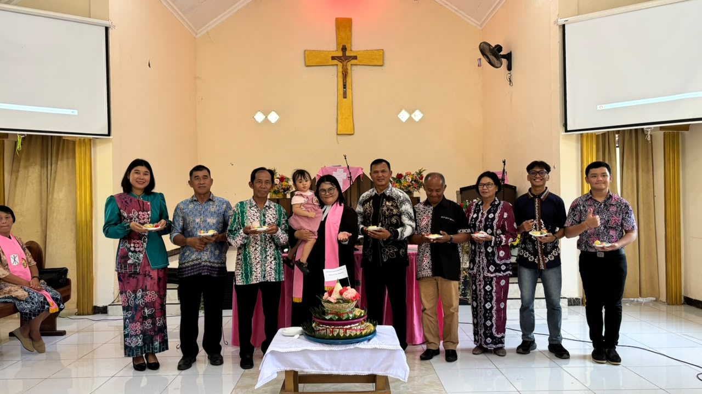

Galeri Kegiatan

Kebersamaan Jemaat SPPER
Kebersamaan dan sukacita pelayanan kaum perempuan SPPER GKE Barabai di altar gereja.

Pelayan Liturgi Hari Perempuan GKE
Para petugas liturgos dari seksi SPPER yang melayani ibadah khusus dengan hikmat.

Penyerahan Berkat
Sukacita para anggota SPPER saat menerima bingkisan kasih apresiasi dalam kegiatan jemaat.

Momen Syukuran Bersama
Foto bersama pendeta dan majelis jemaat dalam acara pemotongan tumpeng penuh ucapan syukur.